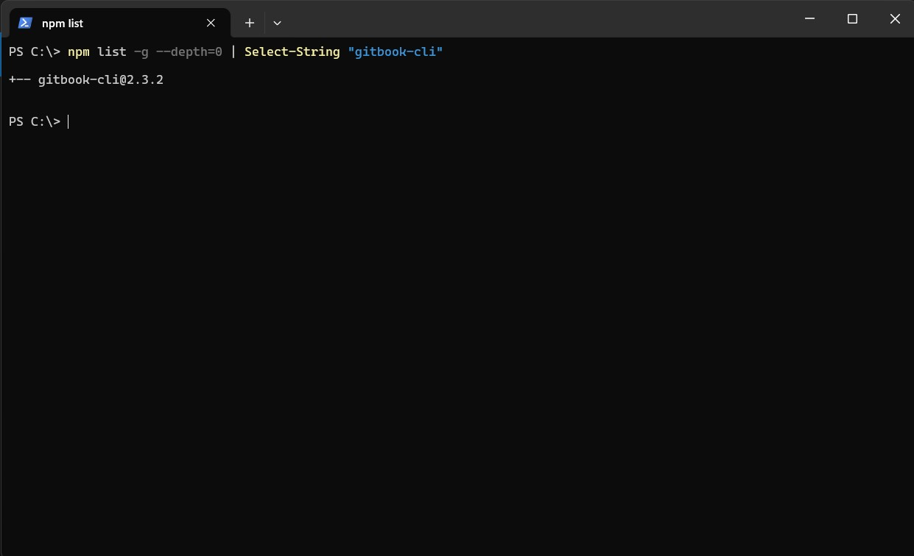
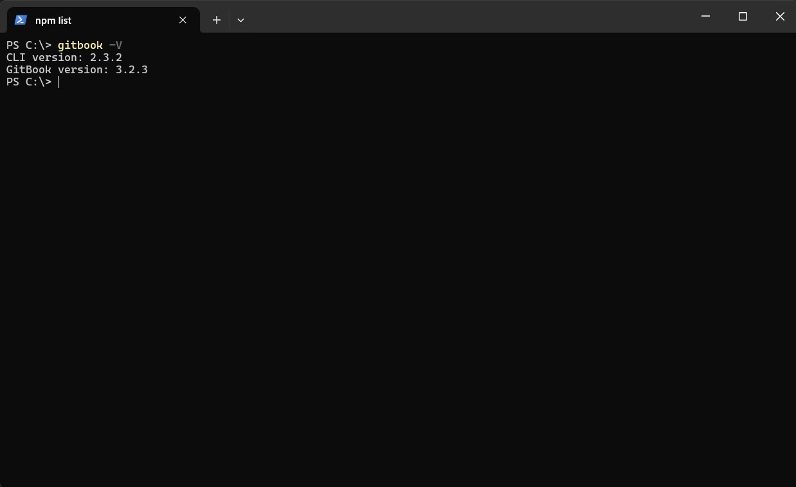
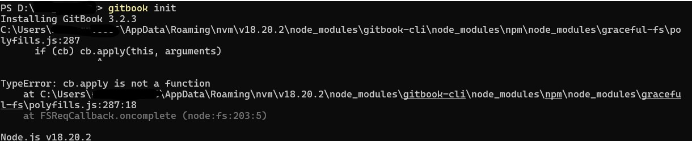
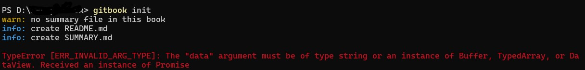
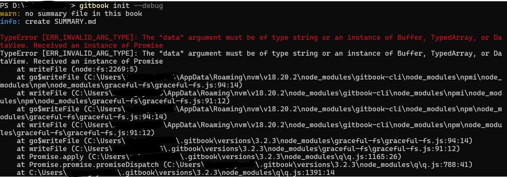

GitBook 安装
GitBook 使用 NPM 進行安裝, 命令行中輸入下面的命令進行安裝 :
$ npm install gitbook-cli -g
-g : 全域安裝
Tips: 後續測試不使用全域也無所謂, 可以直接在自定義的 GitBook 專案目錄底下直接安裝, 不過要先在專案目錄底下 npm init -y
Tips: 後續測試安裝 gitbook-cli 會跳出套件上的相容與依賴項存在漏洞56 vulnerabilities (1 low, 19 moderate, 29 high, 7 critical), 先不處理仍然可以正常跑

確認安裝完成
$ gitbook -V

遇到的問題
1. 使用 gitbook init, 彈出錯誤警告
$ gitbook init

打開 C:\Users\<xxx>\AppData\Roaming\nvm\v18.20.2\node_modules\gitbook-cli\node_modules\npm\node_modules\graceful-fs\polyfills.js
註解 62 - 64 行的code
// fs.stat = statFix(fs.stat)
// fs.fstat = statFix(fs.fstat)
// fs.lstat = statFix(fs.lstat)
2. 解決完第一步後, gitbook init, 彈出另外的錯誤警告
$ gitbook init

執行 debug 命令
$ gitbook init --debug

打開 C:\Users\<xxx>\.gitbook\versions\3.2.3\lib\init.js
註解 72 行的code
// return fs.writeFile(filePath, summary.toText(extension));
return summary.toText(extension).then(stx=>{return fs.writeFile(filePath, stx);});